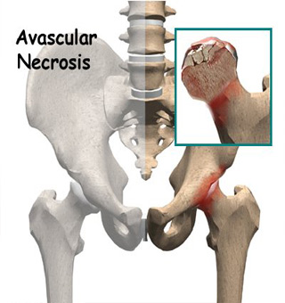
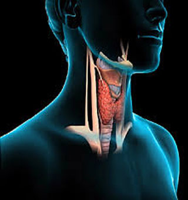

![ayurvedic cancer treatment in mumbai, Ayurcure Ayurvedic doctor in Mumbai provides Ayurvedic treatment for AVN, ayurvedic treatment for Cancer, ayurvedic medicine for HIV, cure of AVN in Ayurveda, desi treatment for AVN, Cancer Ayurvedic treatment, ayurvedic medicine for thyroid, ayurvedic doctor in mumbai, ayurvedic doctor for Cancer in Mumbai, natural healing of AVN, Cancer, Aids, Diabetes, ayurveda treatment in Mumbai, ayurvedic treatment for skin diseases, Slimming Centre, Bridal Package, Facials, Hair Treatments, Ayurvedic Treatment for AIDS, Diabetes, cancer, Mumbai](images/baner1.jpg "ayurvedic cancer treatment in mumbai")
![Ayurcure Ayurvedic doctor in Mumbai provides Ayurvedic treatment for AVN, ayurvedic treatment for Cancer, ayurvedic medicine for HIV, cure of AVN in Ayurveda, desi treatment for AVN, Cancer Ayurvedic treatment, ayurvedic medicine for thyroid, ayurvedic doctor in mumbai, ayurvedic doctor for Cancer in Mumbai, natural healing of AVN, Cancer, Aids, Diabetes, ayurveda treatment in Mumbai, ayurvedic treatment for skin diseases, Slimming Centre, Bridal Package, Facials, Hair Treatments, Ayurvedic Treatment for AIDS, Diabetes, cancer, Mumbai, Ayurvedic Cure for AVN](images/reasrech.jpg)
Welcome to Ayur Cure...
Ayurcure Ayurvedic doctor in Mumbai provides Ayurvedic treatment for AVN, ayurvedic treatment for Cancer, ayurvedic medicine for HIV, cure of AVN in Ayurveda, desi treatment for AVN, Cancer Ayurvedic treatment, ayurvedic medicine for thyroid, ayurvedic doctor in mumbai, ayurvedic doctor for Cancer in Mumbai, natural healing of AVN, Cancer, Aids, Diabetes, ayurveda treatment in Mumbai, ayurvedic treatment for skin diseases, Slimming Centre, Bridal Package, Facials, Hair Treatments, Ayurvedic Treatment for AIDS, Diabetes, cancer, Mumbai.
Following Major Treatments Available at Ayurcure
Ayurvedic Treatment for Multiple sclerosis | Ayurvedic Treatment for PCOD | Ayurvedic Treatment for Obsessive Compulsive Disorder | Ayurvedic Treatment for Depression | Ayurvedic Treatment for Deaddiction(Alchohol, smoking,tobacco etc.) |
Ayurveda is the most ancient and most effective form of medical treatment! Our Mission is to help & cure people with Ayurvedic Treatment & Therapies for continuous & sustainable healthy living & lifestyle! To prevent people from undergoing, unaffordable treatments & having side effects!The Ayurecure offers health services and educational experiences oriented toward helping to restore the bodies' natural intelligence in a holistic way. Our fully licensed or certified healthcare professionals and teachers utilize the best of both ancient and modern Western approaches to bring balance. For more about Ayurveda and Yoga, see the about Ayurveda page. Services include the following: Ayurvedic consultations and treatments (e.g., abhyanga, swedana, shirodhara, facials); massage therapy (e.g. therapeutic/deep tissue, Swedish/relaxation, hot stone therapy, chair massage); and psychotherapy services. For more information on the services, please see the services page.
Ayurcure has a holistic approach to treatment. To achieve cure of both mind and body, counseling is a vital part of the treatment process. In most psycho-somatic illnesses, we notice that the underlying stress becomes a depositing factor for physical problem. After in-depth counselling, treatment is designed to alleviate the psychological problem along with the physical symptoms. Ayurved talks about counselling as `Ashwasan Chikitsa'. Ashwasan literally means `building confidence', which ultimately results in the patient's emotional readiness to heal.
Ayurcure in located in Mumbai! Ayurcure is well spacious with all Ayurvedic medicines made available on the spot along with & for the treatment! It is equipped with an independent Panchakarma treatment
The modern cancer therapy which is known to burdened by drug-induced toxic side effects hoping perfect cure of disease form the complementary and alternative medicine system. The main goal of Ayurvedic therapy is to find the ultimate cause of an illness while the therapeutic approach of Ayurveda is divided into four categories as Prakritisthapani chikitsa (health maintenance), Rasayana chikitsa, (restoration of normal function), Roganashani chikitsa (disease cure) and Naishthiki chikitsa (spiritual approach).[3] Commonly used herbal decoctions reported in Ayurveda are made of multiple herbs possessing great potential for a cancer cure; scientifically these formulations work on multiple biochemical pathways and influence different organ systems all together and nourish the body as a whole by supporting body‘s deference systems.
Herbs help total healing, reduces the side effects and cancer-associated complications. Andrographis paniculata, Annona atemoya, Phyllanthus niruri, Piper longum, Podophyllum hexandrum, Tinospora cordifolia, Semecarpus anacardium, Vitis vinifera, Baliospermum montanum, Madhuca indica, Pandanus odoratissimum, Pterospermum acerifolium, Raphanus sativus, Barleria prionitis, Prosopis cineraria, Amorphopallus campanulatus, Oxoxylum indicum, Basella rubra, Flacourtia romantchi, Moringa oleifera, Ficus bengalensis, Curcuma domestica, Allium sativum, Calotropis gigantean, Datura metel, Hygrophila spinosa, Juniperus indica, Moringa oleifera, Nigella sativa, Picrorrhiza kurroa, Rubia cordifolia, etc. are various plants having scientific evidence of anticancer property.
Nowadays, many herbs are under clinical studies and being investigated phytochemically to understand their anticancer potential. More than 25% of drugs used during the last 20 years are directly derived from plants, while the other 25% are chemically altered natural products. Nine plant-derived compounds including vinblastine, vincristine, etoposide, teniposide, taxol, navelbine, taxotere, topotecan and irinotecan have been approved for use as anticancer drugs. 10-hydroxycamptothecin, monocrotaline, d-tetrandrine, lycobetaine, indirubin, colchicinamide, curcumol, curdione, gossypol and homoharringtonine are few more plant-derived compounds of high hope.
Each herb contains multiple active principles that often operate synergistically producing therapeutic benefits and lowering the risks of adverse effects; and avoids the need for supplemental therapy to manage cancer cachexia. Now it is important to raise awareness and encourage implementation of Ayurvedic therapies for combating cancer and suggest an integrated approach in tumor management and treatment.
|  | Ayurvedic Treatment For AVNAvascular necrosis of femoral head is a disease in which there is deformity on the femoral head of the hip joint.Mostly this is due to low or no blood supply to that particular area of the femoral bone and hence it cause ischemia to that particular part. Ayuredic medicine for avn, best AVN ayurvedic treatment ayurvedic expert for cure of AVN in India. According to ayurveda this is a VAT disease, affecting the hip joint like the arthritis and other joint diseases. Patient feels like difficulty in walking and stiffness in the hip joint,severe pain in the joint. Usually this is such a disease, which is most of the time not curable by surgery also. In the ayurvedic treatment, mostly vat nashak medicines are used and if the disease is in the 1st or 2nd stage, 100% cure is possible, in the advanced stages, the cure rate is 60-70%. Nearly in the all cases, symptomatic relief is there, and patient can walk properly and can do his work properly.We have treated a lot of patients with 100% results, and still treating. Ayurveda gives very good result in case of AVN.
|
| 
TESTIMONIAL - AYURVDIC NATURAL CURE FOR THYROID
| Ayurvedic Treatment For THYROID Thyroid is now a days a common ailment in most of the indian ladies. Thyroid is due to impurity in blood which causes hormonal imbalance and hence causing a no. of symptoms like weight gain ,anorexia,weakness, reduced in activity,loss of cheerfullness ect. In hyperthyroidism, there is increased metabolic activity, high pulse rate and weight loss, palpitation, in the patient. |
seo in mumbai, search engine optimization in mumbai , web designing company in Andheri,
web designing company in Mumbaii, web designing company in Borivali, web designing company in Malad
Ayurvedic Treatment for Thyroid
Ayurvedic Treatment for Migraine
Ayurvedic Treatment for Cancer
Ayurvedic Treatment for HIV AIDS
TESTIMONIAL - AYURVEDIC TREATMENT FOR AVN, AYURVDIC NATURAL CURE FOR AVN
TESTIMONIAL - AYURVDIC NATURAL CURE FOR THYROID
![Ayurcure Ayurvedic doctor in Mumbai provides Ayurvedic treatment for AVN, ayurvedic treatment for Cancer, ayurvedic medicine for HIV, cure of AVN in Ayurveda, desi treatment for AVN, Cancer Ayurvedic treatment, ayurvedic medicine for thyroid, ayurvedic doctor in mumbai, ayurvedic doctor for Cancer in Mumbai, natural healing of AVN, Cancer, Aids, Diabetes, ayurveda treatment in Mumbai, ayurvedic treatment for skin diseases, Slimming Centre, Bridal Package, Facials, Hair Treatments, Ayurvedic Treatment for AIDS, Diabetes, cancer, Mumbai](images/a55.jpg)